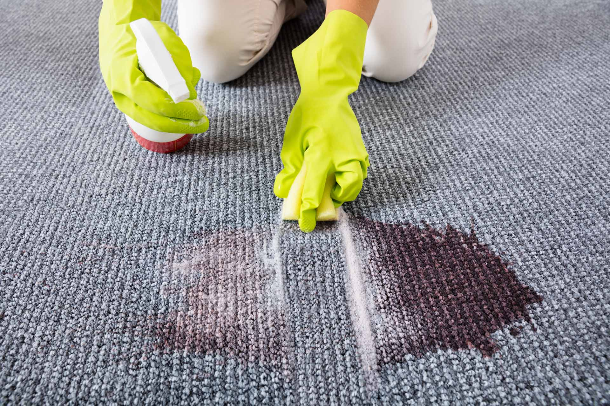
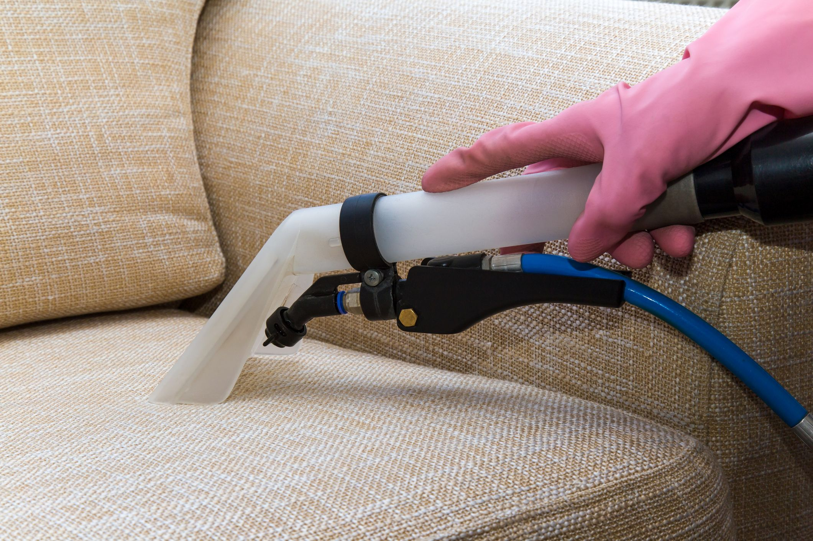
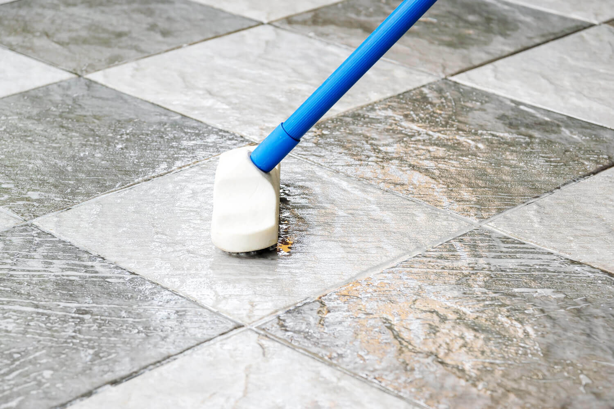

Our Serivces
We offer services that address every challenge that is common to commercial carpet
Service The Way It Used To Be

Rugs are a beautiful way to add texture, depth, and warmth to your home. But just like your carpets, they are subject to the wear and tear of daily foot traffic. We clean and protect your rugs to keep them looking their best!

Commercial Cleaning Services
We work around your schedule. We will start working once the building is vacant and ensure that it is ready to go before the start of business the next day.

Samspades has professional upholstery tools, cleaning products, and upholstery cleaning knowledge. We clean better and faster than DIY methods, and without the use of dirt-attracting soaps and detergents.

Grout is a naturally porous surface that can easily stain, absorb water, and grime. After a professional Zerorez cleaning, adding sealer to your grout will increase its resistance to dirt, spills, and stains.